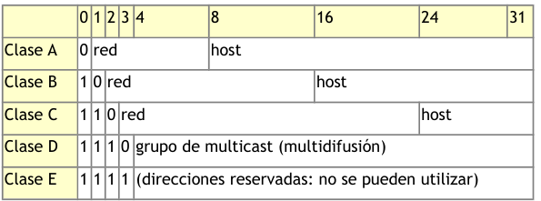
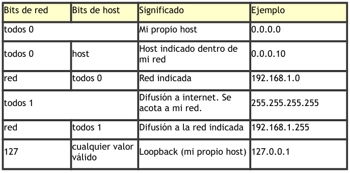
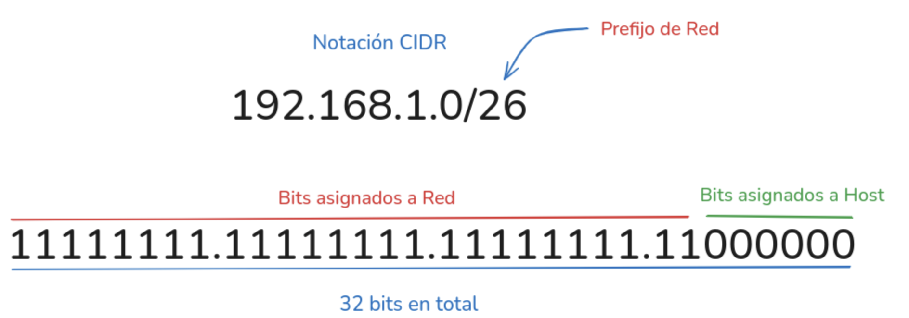
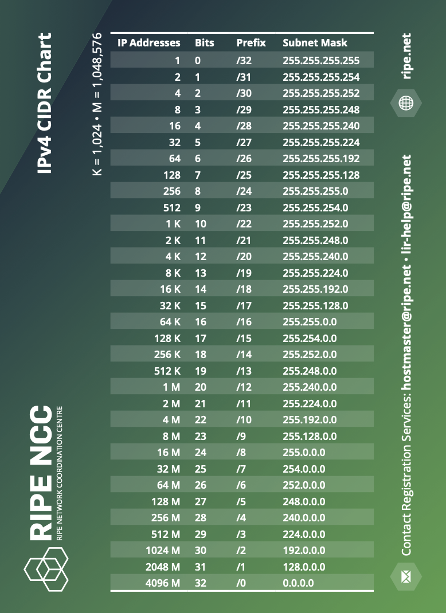
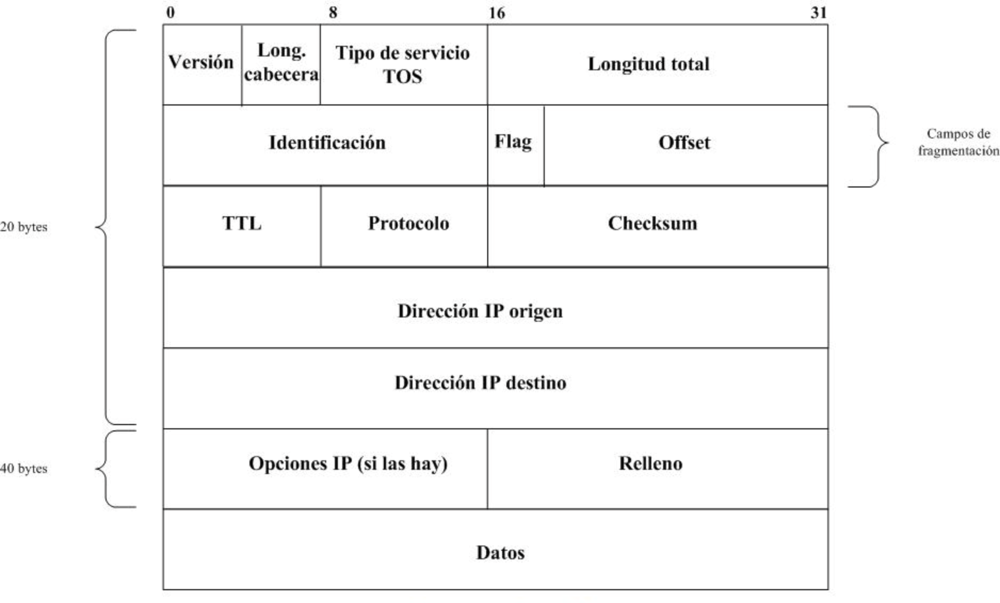
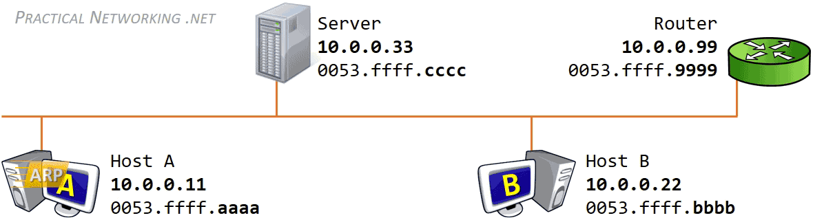
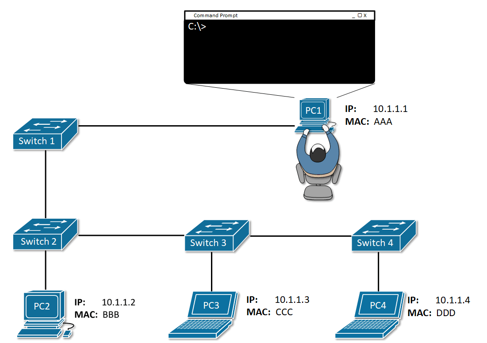

Tema 5. Capa de red¶
En este tema pasamos a la capa 3: direcciones IP, máscaras, CIDR, el datagrama IP y protocolos de apoyo (ARP, ICMP). También vemos el papel del router y cómo configura un cliente (DHCP vs estático).
Primera clase
Empieza por el cuestionario inicial. No hace falta estudiar el tema completo antes: el cuestionario sirve para ver qué sabes al empezar.
Propuesta didáctica¶
Trabajamos los RA1 y RA4 del módulo Redes de área local (0225):
RA1. Reconoce la estructura de redes locales cableadas analizando las características de entornos de aplicación y describiendo la funcionalidad de sus componentes.
RA4. Instala equipos en red, describiendo sus prestaciones y aplicando técnicas de montaje.
Criterios de evaluación (selección)¶
RA1
- CE1a: Se han descrito los principios de funcionamiento de las redes locales.
- CE1c: Se han descrito los elementos de la red local y su función.
RA4
- CE4g: Se han identificado los protocolos.
- CE4h: Se han configurado los parámetros básicos.
Subnetting y VLAN
El diseño de subredes (subnetting) y las VLAN se desarrollan en el Tema 6. Aquí calculamos red / broadcast / hosts con prefijos habituales (/8, /16, /24…) y usamos CIDR como notación.
Contenidos¶
- Funciones de la capa de red; idea TCP/IP en la capa Internet.
- IPv4: formato, clases (contexto) y rangos privados RFC 1918.
- Máscara de red; notación CIDR y tabla de referencia.
- Cálculo de red, broadcast y hosts (ejemplos /24 y similares).
- Datagrama IP (visión breve); ARP; ICMP / ping / traceroute.
- Roles del router; DHCP vs configuración estática en el cliente.
Programación de aula (orientativa, ~14–16 h)¶
| Sesiones | Contenidos | Actividades |
|---|---|---|
| 1 | Presentación + cuestionario | Cuestionario |
| 2–3 | Funciones capa red; IPv4 y clases | AC503, AC504 |
| 4–5 | Privadas RFC1918; APIPA | AC505 |
| 6–8 | Máscara, CIDR, cálculo /24 | AC501, AC502 |
| 9–10 | Datagrama IP; ARP | AC506 |
| 11 | ICMP y comprobaciones | — |
| 12–14 | Packet Tracer: dos LAN + router + ARP | PR501 |
| 15–16 | Repaso | — |
Cuestionario inicial¶
Antes de empezar — responde con lo que sepas
- ¿Qué función cumple la capa de red?
- ¿Qué es una dirección IP y cómo se escribe?
- ¿Qué diferencia hay entre IP pública y privada?
- ¿Qué es una máscara de red?
- ¿Qué significa la notación
/24? - ¿Para qué sirve ARP?
- ¿Qué es un router?
- ¿Qué parámetros necesita un PC para salir a Internet?
Soluciones
Las soluciones se trabajan en clase o se publican en Aules cuando proceda.
Funciones de la capa de red¶
La capa de red (nivel 3 OSI / capa Internet en TCP/IP) se ocupa del encaminamiento entre redes distintas y del direccionamiento lógico (IP).
Principales ideas:
- Elegir la ruta (routing) para que el paquete llegue al destino.
- Identificar cada host con una IP única en su ámbito visible.
- Fragmentar mensajes en datagramas que viajan de forma independiente.
Protocolos de esta capa (familia TCP/IP): IP, ARP, ICMP (e IGMP en multicast).
Red lógica ≠ cableado
Dos PCs en el mismo switch no se comunican a nivel IP si están en redes lógicas distintas. Para cruzar redes hace falta un router.
Direccionamiento IPv4¶
Una dirección IPv4 tiene 32 bits (4 octetos). Se escribe en decimal: a.b.c.d (cada octeto 0–255).
| Representación | Ejemplo |
|---|---|
| Decimal | 128.10.2.30 |
| Binario | 10000000.00001010.00000010.00011110 |
Públicas vs privadas¶
- Pública: visible en Internet (única en el espacio global).
- Privada (RFC 1918): solo dentro de la organización; a Internet se sale vía NAT en el router/firewall.
| Rango privado | Prefijo típico |
|---|---|
10.0.0.0 – 10.255.255.255 |
/8 |
172.16.0.0 – 172.31.255.255 |
/12 |
192.168.0.0 – 192.168.255.255 |
/16 |
Estáticas vs dinámicas¶
- Estática: fija (servidores, impresoras, gateway).
- Dinámica: asignada por DHCP (clientes habituales).
Clases (contexto histórico)¶
Hoy se usa CIDR, pero conviene conocer las clases:
| Clase | Rango (aprox.) | Máscara por defecto |
|---|---|---|
| A | 1–126 | /8 |
| B | 128–191 | /16 |
| C | 192–223 | /24 |
| D | 224–239 | Multicast |
| E | 240–255 | Experimental |


Direcciones especiales¶
| Dirección | Uso |
|---|---|
127.0.0.1 (/8 loopback) |
Localhost |
0.0.0.0 |
No especificada / ruta por defecto (contexto) |
255.255.255.255 |
Broadcast limitado |
169.254.0.0/16 |
APIPA (autoasignación si falla DHCP) |
Organismos: IANA, ICANN, RIR (RIPE NCC en Europa…).
Máscara de red y CIDR¶
La máscara marca qué bits son de red (1) y cuáles de host (0).
Ejemplo: 192.168.1.100 con máscara 255.255.255.0 → red 192.168.1.0, host .100.
Notación CIDR¶
Formato: dirección/prefijo (bits de red).

| Prefijo | Máscara | Direcciones totales |
|---|---|---|
/8 |
255.0.0.0 | 16.777.216 |
/16 |
255.255.0.0 | 65.536 |
/24 |
255.255.255.0 | 256 |
/26 |
255.255.255.192 | 64 |
/30 |
255.255.255.252 | 4 |

Hosts utilizables ≈ (2^{bits host} - 2) (se restan red y broadcast), salvo casos especiales (/31, /32).
Cálculo de red, broadcast y hosts¶
Método /24 (clase C habitual)¶
IP 192.168.1.100, máscara /24:
| Concepto | Valor |
|---|---|
| Red | 192.168.1.0 |
| Broadcast | 192.168.1.255 |
| Primera IP válida | 192.168.1.1 |
| Última IP válida | 192.168.1.254 |
| Hosts | (2^8 - 2 = 254) |
Errores frecuentes¶
- No asignar la IP de red ni la de broadcast a un host.
- Olvidar restar 2 al calcular hosts.
- Confundir máscara decimal y prefijo CIDR.
Tema 6
Dividir una red en varias subredes (tomar bits “prestados”) y agrupar redes (supernetting) → Tema 6.
Datagrama IP (breve)¶
IP es no orientado a conexión y de mejor esfuerzo: no garantiza entrega ni orden.
Campos útiles a recordar: TTL, protocolo (TCP/UDP/ICMP…), IP origen/destino, flags de fragmentación.

Si el paquete supera el MTU del enlace (Ethernet ≈ 1500 bytes), puede fragmentarse; solo el destino reensambla.
ARP¶
ARP resuelve IP → MAC dentro de la misma red local (mismo dominio de broadcast).
- ARP Request (broadcast): «¿Quién tiene la IP X?»
- ARP Reply (unicast): «Yo; mi MAC es …»
- Se guarda en la caché ARP.

Si el destino está en otra red, se usa ARP para obtener la MAC de la puerta de enlace (router), no la del host remoto.
ARP spoofing
Mensajes ARP falsos pueden asociar una MAC incorrecta a una IP. En redes sensibles se mitiga (inspección ARP, entradas estáticas…).
ICMP, ping y traceroute¶
ICMP lleva mensajes de control y error (capa de red).
| Uso | Idea |
|---|---|
ping |
Echo Request / Reply |
traceroute / tracert |
Descubre saltos (TTL / Time Exceeded) |
| Destination Unreachable | No se puede entregar |

Orden típico de comprobación: localhost → IP local → gateway → IP externa → nombre DNS.
Router: roles¶
Un router interconecta redes IP distintas: una IP por interfaz (LAN/WAN). Encamina según la tabla de rutas.
Interfaces habituales: LAN (hacia la red local), WAN (hacia el proveedor), puertos de gestión (consola).
La configuración detallada de rutas estáticas y el diseño de subredes → Tema 6.
Cliente: DHCP vs estático¶
Parámetros mínimos de un cliente:
- Dirección IP
- Máscara
- Puerta de enlace (gateway)
- DNS
| Modo | Quién asigna | Uso típico |
|---|---|---|
| DHCP | Servidor / router | PCs de usuario |
| Estático | Administrador | Servidores, impresoras, gateway |
Comprobaciones: ping 127.0.0.1, ping a la IP local, ping al gateway, ping 8.8.8.8, ping a un nombre.
Actividades¶
Formato de entrega
Las entregas en Aules son obligatorias en Markdown (.md). No se aceptan PDF.
Nombre del archivo: AC5XX.md o PR5XX.md (sustituye XX por el número). Respeta la fecha de vencimiento.
Escribiremos los .md con Visual Studio Code.
Cómo empezar
- Guía de Markdown: tutorialmarkdown.com/guia
- Documentación de Visual Studio Code: code.visualstudio.com/docs
AC501 — Cálculo /24¶
- AC501. (RA1 // CE1a, CE1c // AC 0–1). Para
192.168.10.45/24indica: red, broadcast, nº de hosts y rango de IPs válidas. Repite el cálculo con otras dos direcciones/24distintas. Explica los pasos.
AC502 — Bloques CIDR¶
- AC502. (RA1 // CE1a // AC 0–1). Para prefijos
/24,/16y/8: total de direcciones, hosts utilizables, ejemplo de red y de broadcast. Ventajas de CIDR frente a clases fijas (3–5 líneas).
AC503 — Validar IPs¶
- AC503. (RA1 // CE1a // AC 0–1). Indica cuáles son inválidas y por qué:
1.1.1.1·2.2.2.200·200.260.0.3·4.4.4.4.4·5.0.0.300·256.244.244.4·700.1000.100·0.0.0.0·255.255.255.255.
Resume las reglas de un octeto IPv4.
AC504 — Direcciones especiales¶
- AC504. (RA1 // CE1a // AC 0–1). Significado de:
127.0.0.1,0.0.0.0,255.255.255.255,10.255.255.255,192.168.1.255,172.16.255.255,10.0.0.0,172.16.0.0,192.168.0.0. Clasifica (loopback / broadcast / red / otra).
AC505 — Privadas y APIPA¶
- AC505. (RA1 // CE1a // AC 0–1). Para cada IP indica máscara por defecto (clase) y si es privada RFC1918 / pública / APIPA / loopback:
127.0.0.1,8.8.8.8,10.2.2.2,169.254.254.254,192.168.1.254,172.16.55.55,198.164.2.3,1.0.0.1.
Explica cuándo aparece APIPA.
AC506 — Proceso ARP¶
- AC506. (RA1 // CE1a // RA4 // CE4g // AC 0–1). Con 4 hosts inventados (IP + MAC), describe Request/Reply la primera vez que A habla con B en la misma LAN, y qué cambia si B está detrás del router (gateway).
PR501 — Packet Tracer: dos LAN + router + ARP¶
-
PR501. (RA1 // CE1a, CE1c // RA4 // CE4g, CE4h // PR 0–10). Simulación en Packet Tracer:
-
LAN1: 2 PCs + switch (
192.168.1.0/24) - Router intermedio
- LAN2: 2 PCs + switch (
192.168.2.0/24)
Configura IPs estáticas y gateways; verifica conectividad entre redes; observa tablas ARP y el papel del gateway. El guion completo se facilitará en clase / Aules.
| Criterio | Descripción | Puntos |
|---|---|---|
| Topología e IPs | Direcciones coherentes | 0–2 |
| Conectividad | Ping intra e inter-LAN | 0–3 |
| ARP | Evidencia de tablas / mensajes | 0–3 |
Informe .md |
Capturas y explicación | 0–2 |
| Total | /10 |
Referencias rápidas¶
- Sitio del módulo: fjavier-hernandez.github.io/ral
- CIDR (RFC 4632): datatracker.ietf.org/doc/html/rfc4632
- Simulación: Cisco Packet Tracer
- Entregas: Visual Studio Code + Markdown
- Normas: Normas del taller